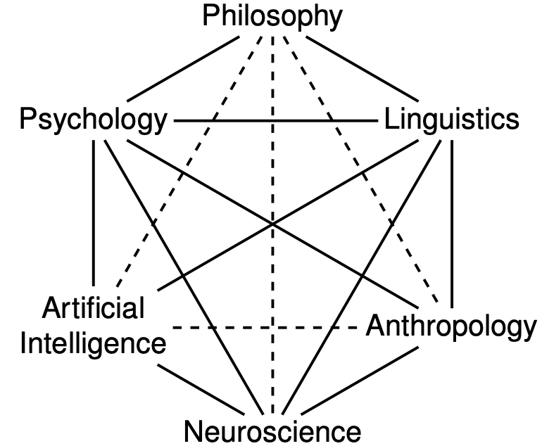

Neurowissenschaftliche Experimente
Gerda Wyssen ![]()
Daniel Fitze
Nothing in neuroscience makes sense except in the light of behavior.
Shepherd (1988)
Forschungsbereiche der Neurowissenschaften
In der Neurowissenschaft wird mit naturwissenschaftlichem Schwerpunkt der Aufbau und die Funktionen des Nervensystems untersucht. Neurowissenschaften sind ein sehr weites Forschungsbereich in dem unterschiedlichste und zahlreiche Themen bearbeitet werden. Zur Neurowissenschaft zählen u.a. folgende Bereiche:
| Bereich | Beschreibung |
|---|---|
| Affective neuroscience | Zusammenhang Gehirn und emotionale Zustände |
| Behavioral neuroscience | Einfluss des Gehirns auf Verhalten |
| Clinical neuroscience | Störungen des Nervensystems, Vorbeugung, Behandlung und Rehabilitation |
| Cognitive neuroscience | Neuronale Grundlagen von kognitiven Prozessen |
| Computational neuroscience | Simulation und Modellierung von Hirnfunktionen |
| Cultural neuroscience | Einfluss kultureller Faktoren auf das Gehirn |
| Developmental neuroscience | Entwicklung des Nervensystems über die ganze Alterspanne |
| Evolutionary neuroscience | Evolution des Nervensystems |
| Molecular and cellular neuroscience | Rolle einzelner Moleküle, Gene und Proteine bei der Funktion des Nervensystems sowie meuronale Prozesse auf Zellebene |
| Neuroanatomy | Anatomie des Nervensystems |
| Neuroengineering | neuronale Systeme verstehen, ersetzen, reparieren oder verbessern |
| Neurochemistry | Chemische Prozesse im Nervensystem und Neurotransmitter sowie psychopharmakologische Anwendungen |
| Neuroimaging | Teilbereich medizinischer Bildgebung mit Fokus auf dem Gehirn |
| Neuroinformatics | Entwicklung von Methoden zur Sammlung, Analyse, Nutzung und Veröffentlichung von Daten |
| Neurolinguistics | Rolle des Gehirns beim Erwerben, Speichern, Verstehen und Ausdrücken von Sprache |
| Neurophysiology | Rolle des Nervensystems von der subzellulären Ebene bis hin zu ganzen Organen |
| Neuropsychology | Neuropsychologische Prozesse und Krankheitsbilder |
| Sensory neuroscience | Sensorische Systeme und die Interpretation deren Informationen durch das Nervensystem |
| Social neuroscience | Neuronale Grundlagen von sozialen Prozessen und Verhalten |
| Systems neuroscience | Funktion von neuronalen Verbindungen und Systemen |
Quelle: Wikipedia
Neurowissenschaftliche Forschung wird oft an Organismen und Tieren durchgeführt (z.B. Einzelzellableitungen in Affen). In diesem Kurs fokussieren wir uns auf neurowissenschaftliche Forschung am Menschen im Bereich der kognitiven Neurowissenschaft und Neuropsychologie. Das bedeutet wir besprechen die Datenerhebung und -verarbeitung in verhaltenswissenschaftlichen Experimenten (teilweise auch im Zusammenhang mit bildgebenden Verfahren), welche Gehirnprozesse von Menschen untersuchen.
Kognitive Neurowissenschaften sind eng verknüpft mit Forschungsbereichen, wie beispielsweise der Psychologie, der Linguistik, künstlicher Intelligenz, Philosophie und Anthropologie:

Experimente in den Kognitiven Neurowissenschaften
Neurowissenschaftliche Experimente müssen exakt auf die Fragestellung zugeschnitten werden um aussagekräftige Daten zu liefern. Deshalb programmieren die meisten Forschenden ihre Experimentalparadigmen selbst. So können beispielsweise Instruktionen oder verwendete Stimuli, deren Grösse und Anzeigedauer präzise definiert werden.
Im Nachfolgenden gehen wir auf einige wichtige Punkte für das Erstellen und Durchführen neurowissenschaftlicher Experimente ein.
Besondere Herausforderungen von Experimenten in den Verhaltens-/Neurowissenschaften
Präzision: Hohe räumliche und zeitliche Auflösung
Eine grosse Schwierigkeit neurowissenschaftlicher Experimente ist oft, dass eine präzise Kontrolle von räumlichen und zeitliche Eigenschaften der Experimente nötig ist um sinnvolle Daten zu erhalten. Visuelle Stimuli müssen z.B. sehr genau und immer gleich präsentiert werden können. Die zeitliche Auflösung ist gerade bei EEG Experimenten von enormer Bedeutung, da EEG eine sehr hohe zeitliche Auflösung hat. Räumliche Auflösung kann bedeuten, dass sehr präzise visuelle Darbietung möglich sein muss, sowie dass die Versuchsperson sich im Setup nicht bewegen darf, weil dies die Distanzen verschiebt (z.B. im MRT, oder der Abstand zum Bildschirm beim Eyetracking).
Synchronisation: Mehrere Datenspuren
Neurowissenschaftliche Experimente beinhalten oft die Datenerhebung auf mehreren Ebenen, z.B. wird gleichzeitig Hirnaktivität und das Drücken von Antwortbuttons aufgenommen. Das bedeutet, dass Bildschirm, MRT/EEG/Eyetracking/etc., sowie die Antwort zeitlich koregistriert/synchronisiert werden müssen, um die Daten im Nachhinein auswerten zu können. Technisch ist das oft mit grossem Aufwand verbunden und benötigt einiges an Pilotierung.
Komplexität: Zu untersuchender Prozess und Störprozesse
Oft soll ein ganz spezifischer Prozess untersucht werden, aber das ist eine sehr komplexe Aufgabe, weil im menschlichen Gehirn gleichzeitig sehr viele verschiedene Prozesse ablaufen, kein Hirnareal hat nur eine einzige Aufgabe und aus ethischen Gründen ist das “Ausschalten” von Störfaktoren nicht immer möglich. Was kann man tun?
Ein Weg den Prozess sichtbar zu machen ist es zum Beispiel einen Kontrast zu rechnen, dies wird beispielsweise bei EEG und fMRI Experimenten, aber auch bei Reaktionszeitexperimenten sehr oft gemacht. Hierfür erhebt man Daten in einer Test-Bedingung in der der Prozess abgerufen wird und eine Kontroll-Bedingung, welche als “Baseline” dient. Die Baseline enthält alle “nicht interessierenden” Prozesse, die in der Test-Bedingung vorhanden sind. Durch das Vergleichen der Test- und Kontrollbedingung erhält man einen Kontrast: Also das was den interessierenden Prozess ausmacht!
Sie müssen sich beim Erstellen eines Experiments also nicht nur Gedanken dazu machen, was Sie interessiert - sondern genau so auch darüber was Sie nicht interessiert. In der Theorie tönt das einfach, in der Praxis ist das oft recht kniffelig.
Datenerhebung: Teuer und anspruchsvoll
Bildgebende Verfahren, benötigen zum Teil extrem teure Geräte, wie z.B. fMRI, und bedeuten oft hohen Aufwand, z.B. das Kleben der Elektroden beim EEG. Bei der Untersuchung von ganz bestimmten Patientengruppen hat man zudem oft nicht sehr viele Personen zur Verfügung die den Einschlusskriterien entsprechen. Oft müssen Personen auch aus dem Experiment ausgeschlossen werden, weil sie z.B. Auffälligkeiten im MRI zeigen, die nichts mit dem zu untersuchenden Prozess zu tun hat oder sie brechen während der Untersuchung ab. Gerade bei der Untersuchung klinischer Aspekte stellen sich oft Schwierigkeiten, wie beispielsweise fehlende Motivation oder Compliance von Patient:innen. Daher können oft keine sehr grossen Stichproben erhoben werden, was im Gegenzug besonders präzise Experimente erfordert.
Passendes Experiment muss selber erstellt werden
Oft muss ein neues Paradigma erstellt werden, d.h. Forschende können kein schon bestehendes Experiment nutzen, sondern untersuchen einen Aspekt eines neuronalen Prozesses mit einer neuen Methode, einer neuen Fragestellung oder einem neuen Ansatz. Dies erfordert breiteKenntnisse im Programmieren, der zu verwendenden Technik, wie auch der Gehirnprozesse.
Wichtige Elemente von Experimenten
Beim Programmieren von Experimenten lohnt es sich, sich zuerst darüber im klaren zu sein, welche Bausteine das geplante Experiment hat. Im Folgenden werden einige typische Elemente eines Verhaltensexperiments beschrieben. Oft kommen hier natürlich noch Stimulations- oder Aufnahmemethoden hinzu.
Begrüssung und Einverständniserklärung
Hier wird die Versuchsperson begrüsst, wird über das Experiment aufgeklärt und gibt (wenn nicht vorher auf Papier schon geschehen) ihre Einverständnis zur Teilnahme am Experiment. Dies wird je nach Ethikkommission und Ethikantrag unterschiedlich gehandhabt. Wichtige Informationen sind hierbei, dass die Versuchsperson weiss worauf sie sich einlässt (Ist zum Beispiel Hirnstimulation/fMRI/etc. geplant? Wie lange dauert das Experiment ungefähr? Was soll sie tun, wenn sie abbrechen möchte?). Die Schwierigkeit ist oft, genügend Information zu geben aber die Hypothese nicht zu verraten.
Instruktion
Die Instruktion wird oft schriftlich gegeben, um diese zwischen den Versuchspersonen konstant zu halten. Es ist teilweise herausfordernd, einen Task so genau zu erklären, dass er verständlich ist, aber die Erklärung auch kurz genug zu halten, dass die Instruktion auch gelesen wird. Oft werden Übungstrials verwendet um die Instruktion zu verdeutlichen.
Stimuli
Unter Stimuli werden die gezeigten Elemente verstanden, die den Task ausmachen. Es können Töne, Bilder, Wörter, etc. als Stimuli verwendet werden.
Welche Stimuli aus neurowissenschaftlichen Experimenten kennen Sie?
Tauschen Sie sich mit Ihren Mitstudierenden aus und schreiben/zeichnen Sie ein paar Beispiele vorne an die Tafel.
[~5 Minuten]
Trial
Ein Trial beschreibt ein sich wiederholender Vorgang in dem der Stimulus gezeigt wird und z.B. von der Versuchsperson eine Antwort erwartet wird. Ein Trial wird oft sehr viele Male wiederholt. Die Stimuli können zwischen den Trials variieren oder gleich bleiben. Das Timing der Trials kann konstant sein (ein Stimulus wird bspw. immer gleich lang gezeigt) oder variiert werden (unterschiedliche Anzeigedauer).
Zwischen den Trials wird ein Inter-Trial-Interval (ITI) festgelegt. Dies wird z.B. bei fMRI Experimenten dann variiert, damit (je nach Repetition Time/TR) nicht immer in derselben Schicht aufgenommen wird bei Stimuluspräsentation.
Während einem Trial wird die Antwort / Response der Versuchsperson aufgenommen. Bei der Aufnahme von Reaktiosnzeiten muss festgelegt werden, wann der Trial oder die Stimuluspräsentation beginnt und mit welcher Handlung sie endet. Es kann bestimmt werden, welche Antworten zulässig sind (bspw. nur bestimmte Tasten) und was passiert wenn eine richtige oder falsche Antwort gegeben wird: Gibt es z.B. ein Feedback bei falschen Antworten?
Run / Block
Ein Run/ein Block bezeichnet eine Einheit mit mehreren Trials. Oft werden Bedingungen z.B. zwischen den Runs randomisiert. Zwischen den Runs sind Pausen möglich, damit sich die Versuchsperson erholen kann. Oft wird vor dem Experimentstart ein “Übungsblock” durchgeführt, um sich sicher zu sein, dass die Versuchspersonen die Aufgabe und Instruktion verstanden haben.
Debriefing und Verabschiedung
Im Debriefing wird der Versuchsperson erklärt, um was es im Experiment gegangen ist, welche Hypothesen untersucht wurden und eine eventuelle Coverstory aufgedeckt. Oft werden Personen vor dem Debriefing nach der getesteten Hypothese gefragt, um zu schauen, ob sie diese erraten hatten. Das gibt Aufschluss darüber wie sehr das Experiment dadurch verzerrt sein könnte, dass die Versuchspersonen Bescheid wissen. Wichtig ist es auch den Versuchspersonen zum Schluss zu danken.
Vorgehen Experiment programmieren
Wichtige Schritte beim Programmieren von Experimenten sind folgende (nicht unbedingt in dieser Reihenfolge, das kommt auf das Experiment an):
Task auswählen
Stimuli auswählen
Timing festlegen: Dauer Stimuluspräsentation? ITIs (Inter-Trial-Intervals)?
Anzahl Bedingungen und Trials bestimmen (Power bedenken), within oder between Design?
Ablauf des Experiments festlegen: Gesamtdauer? Pausen nötig?
Coverstory, Stimulus-Masking, etc. nötig?
Einbindung von allen technischen Geräten (z.B. EEG Recorder, MRT, Brainstimulation-Devices, Eyetracking) und Synchronisation
Flowcharts
Bei der Planung und dem Erstellen eines Experiments ist es sehr hilfreich eine Flowchart zu erstellen. In einer Flowchart sind die oben genannten Elemente des Experimentes in Boxen eingezeichnet und mit Pfeilen verbunden um sie zeitlich einzuordnen. Timing-Informationen können unter oder neben den Boxen festgehalten werden. Die Anzahl Repetitionen wird oft neben den Pfeilen eingefügt.
Eine Flowchart eignet sich ebenfalls sehr gut, um in einem Artikel darzustellen, wie der Ablauf des Experiments war.
References
Reuse
Citation
@online{wyssen,
author = {Wyssen, Gerda and Fitze, Daniel},
title = {Neurowissenschaftliche {Experimente}},
url = {https://kogpsy.github.io/neuroscicomplabFS24//pages/chapters/neurowissenschaftliche_experimente.html},
langid = {en}
}